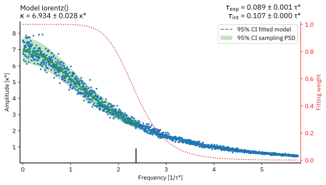
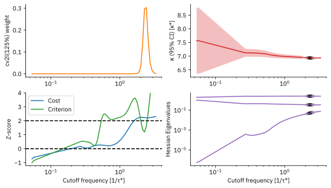

Thermal Conductivity of a Lennard-Jones Liquid Near the Triple Point (LAMMPS)¶
This example shows how to derive the thermal conductivity using heat flux data from a LAMMPS simulation. It uses the same production runs and conventions as in the Shear viscosity example. The required theoretical background is explained the section Thermal Conductivity.
Warning
A Lennard-Jones system only exhibits pairwise interactions,
for which the LAMMPS command compute/heat flux produces valid results.
For systems with three- or higher-body interactions, one cannot simply use the same command.
Consult the theory section on thermal conductivity
for more background.
Note
The results in this example were obtained using LAMMPS 29 Aug 2024 Update 3. Minor differences may arise when using a different version of LAMMPS, or even the same version compiled with a different compiler.
Library Imports and Configuration¶
import os
import numpy as np
import matplotlib.pyplot as plt
import matplotlib as mpl
from path import Path
from yaml import safe_load
from stacie import (
UnitConfig,
compute_spectrum,
estimate_acint,
LorentzModel,
plot_fitted_spectrum,
plot_extras,
)
mpl.rc_file("matplotlibrc")
%config InlineBackend.figure_formats = ["svg"]
# You normally do not need to change this path.
# It only needs to be overridden when building the documentation.
DATA_ROOT = Path(os.getenv("DATA_ROOT", "./")) / "lammps_lj3d/sims/"
Analysis of the Production Simulations¶
The function estimate_thermal_conductivity implements the analysis,
assuming the data have been read from the LAMMPS outputs and are passed as function arguments.
def estimate_thermal_conductivity(name, jcomps, av_temperature, volume, timestep):
# Create the spectrum of the heat flux fluctuations.
# Note that the Boltzmann constant is 1 in reduced LJ units.
uc = UnitConfig(
acint_fmt=".3f",
acint_symbol="κ",
acint_unit_str="κ*",
freq_unit_str="1/τ*",
time_fmt=".3f",
time_unit_str="τ*",
)
spectrum = compute_spectrum(
jcomps,
prefactors=1 / (volume * av_temperature**2),
timestep=timestep,
)
# Estimate the thermal conductivity from the spectrum.
result = estimate_acint(spectrum, LorentzModel(), verbose=True, uc=uc)
# Plot some basic analysis figures.
plt.close(f"{name}_spectrum")
_, ax = plt.subplots(num=f"{name}_spectrum")
plot_fitted_spectrum(ax, uc, result)
plt.close(f"{name}_extras")
_, axs = plt.subplots(2, 2, num=f"{name}_extras")
plot_extras(axs, uc, result)
# Return the thermal conductivity
return result.acint
The following cell implements the analysis of the production simulations.
def demo_production(npart: int = 3, ntraj: int = 100):
"""
Perform the analysis of the production runs.
Parameters
----------
npart
Number of parts in the production runs.
For the initial production runs, this is 1.
ntraj
Number of trajectories in the production runs.
Returns
-------
kappa
The estimated thermal conductivity.
"""
# Load the configuration from the YAML file.
with open(DATA_ROOT / "replica_0000_part_00/info.yaml") as fh:
info = safe_load(fh)
# Load trajectory data, without hardcoding the number of runs and parts.
thermos = []
heatfluxes = []
for itraj in range(ntraj):
thermos.append([])
heatfluxes.append([])
for ipart in range(npart):
prod_dir = DATA_ROOT / f"replica_{itraj:04d}_part_{ipart:02d}/"
thermos[-1].append(np.loadtxt(prod_dir / "nve_thermo.txt"))
heatfluxes[-1].append(np.loadtxt(prod_dir / "nve_heatflux_blav.txt"))
thermos = [np.concatenate(parts).T for parts in thermos]
heatfluxes = [np.concatenate(parts).T for parts in heatfluxes]
# Compute the average temperature.
av_temperature = np.mean([thermo[1].mean() for thermo in thermos])
# Compute the thermal conductivity.
# Note that the last three columns are not used in the analysis.
# According to the LAMMPS documentation, the last three columns
# only contain the convective contribution to the heat flux.
# See https://docs.lammps.org/compute_heat_flux.html
jcomps = np.concatenate([heatflux[1:4] for heatflux in heatfluxes])
return estimate_thermal_conductivity(
f"part{npart}",
jcomps,
av_temperature,
info["volume"],
info["timestep"] * info["block_size"],
)
kappa_production = demo_production(3)
CUTOFF FREQUENCY SCAN cv2l(125%)
neff criterion fcut [1/τ*]
--------- ---------- ----------
15.0 inf 4.71e-02 (rel.err. tau_exp > 1.0e+02 x rel.err. ac integral)
15.9 inf 5.01e-02 (rel.err. tau_exp > 1.0e+02 x rel.err. ac integral)
16.9 130.9 5.34e-02
18.0 124.3 5.68e-02
19.1 inf 6.05e-02 (opt: Hessian matrix has non-positive eigenvalues: evals=array([-6.75412020e-06, 4.43842256e-01, 2.55616450e+00]))
20.3 inf 6.44e-02 (opt: Hessian matrix has non-positive eigenvalues: evals=array([-3.50407301e-06, 4.43068635e-01, 2.55693487e+00]))
21.6 inf 6.85e-02 (No correlation time estimate available.)
23.0 inf 7.30e-02 (No correlation time estimate available.)
24.4 inf 7.77e-02 (No correlation time estimate available.)
25.9 inf 8.27e-02 (No correlation time estimate available.)
27.6 inf 8.80e-02 (No correlation time estimate available.)
29.3 inf 9.37e-02 (No correlation time estimate available.)
31.2 inf 9.97e-02 (No correlation time estimate available.)
33.2 inf 1.06e-01 (No correlation time estimate available.)
35.3 inf 1.13e-01 (No correlation time estimate available.)
37.5 inf 1.20e-01 (No correlation time estimate available.)
39.9 inf 1.28e-01 (No correlation time estimate available.)
42.4 inf 1.36e-01 (No correlation time estimate available.)
45.1 inf 1.45e-01 (opt: Hessian matrix has non-positive eigenvalues: evals=array([-1.00541799e-04, 4.38053694e-01, 2.56204685e+00]))
48.0 inf 1.54e-01 (opt: Hessian matrix has non-positive eigenvalues: evals=array([-1.17919538e-04, 4.37106550e-01, 2.56301137e+00]))
51.1 inf 1.64e-01 (opt: Hessian matrix has non-positive eigenvalues: evals=array([-9.50267075e-05, 4.36440454e-01, 2.56365457e+00]))
54.4 inf 1.75e-01 (rel.err. tau_exp > 1.0e+02 x rel.err. ac integral)
57.8 inf 1.86e-01 (rel.err. tau_exp > 1.0e+02 x rel.err. ac integral)
61.5 inf 1.98e-01 (rel.err. tau_exp > 1.0e+02 x rel.err. ac integral)
65.5 inf 2.11e-01 (rel.err. tau_exp > 1.0e+02 x rel.err. ac integral)
69.7 inf 2.25e-01 (rel.err. tau_exp > 1.0e+02 x rel.err. ac integral)
74.1 inf 2.39e-01 (rel.err. tau_exp > 1.0e+02 x rel.err. ac integral)
78.9 inf 2.55e-01 (rel.err. tau_exp > 1.0e+02 x rel.err. ac integral)
83.9 93.2 2.71e-01
89.3 80.6 2.89e-01
95.0 72.2 3.07e-01
101.1 66.4 3.27e-01
107.6 61.5 3.48e-01
114.5 57.6 3.70e-01
121.9 53.4 3.94e-01
129.7 49.5 4.20e-01
138.0 45.8 4.47e-01
146.9 43.2 4.76e-01
156.3 41.8 5.06e-01
166.4 40.7 5.39e-01
177.1 39.4 5.74e-01
188.5 36.9 6.11e-01
200.6 33.5 6.50e-01
213.5 29.8 6.92e-01
227.2 26.0 7.37e-01
241.9 22.3 7.84e-01
257.4 18.8 8.35e-01
274.0 15.7 8.89e-01
291.6 12.8 9.46e-01
310.4 10.3 1.01e+00
330.4 8.1 1.07e+00
351.7 6.3 1.14e+00
374.3 4.8 1.21e+00
398.4 3.6 1.29e+00
424.1 2.7 1.38e+00
451.4 1.9 1.47e+00
480.5 1.2 1.56e+00
511.5 0.4 1.66e+00
544.4 -0.8 1.77e+00
579.5 -2.2 1.88e+00
616.9 -3.8 2.00e+00
656.6 -5.2 2.13e+00
698.9 -6.0 2.27e+00
744.0 -6.0 2.42e+00
791.9 -5.4 2.57e+00
843.0 -4.3 2.74e+00
897.3 -3.1 2.91e+00
955.1 -1.9 3.10e+00
1016.7 0.2 3.30e+00
Reached the maximum number of effective points (1000).
INPUT TIME SERIES
Time step: 0.030 τ*
Simulation time: 300.000 τ*
Maximum degrees of freedom: 600.0
MAIN RESULTS
Autocorrelation integral: 6.934 ± 0.028 κ*
Integrated correlation time: 0.107 ± 0.000 τ*
SANITY CHECKS (weighted averages over cutoff grid)
Effective number of points: 729.1 (ideally > 60)
Regression cost Z-score: 2.2 (ideally < 2)
Cutoff criterion Z-score: 1.8 (ideally < 2)
MODEL lorentz() | CUTOFF CRITERION cv2l(125%)
Number of parameters: 3
Average cutoff frequency: 2.37e+00 1/τ*
Exponential correlation time: 0.089 ± 0.001 τ*
RECOMMENDED SIMULATION SETTINGS (EXPONENTIAL CORR. TIME)
Block time: < 0.028 ± 0.001 τ*
Simulation time: > 5.611 ± 0.007 τ*


The exponential correlation time of the heat flux tensor fluctuations is about four times shorter than that of the pressure tensor fluctuations. This means that the thermal conductivity is a bit easier to compute than the viscosity. Note that the selected block size is still compatible with this shorter time scale.
Similarly to the bulk viscosity, the Z-scores are clearly positive. This could be for the same reasons as in the bulk viscosity example. In addition, the block size of 0.03 τ* is slightly larger than the recommended 0.028 τ*, meaning that the spectrum might be perturbed by (very) small aliasing effects that could distort the fit.
Comparison to Literature Results¶
A detailed literature survey of computational estimates of the thermal conductivity of a Lennard-Jones fluid can be found in [VSG07b]. Viscardi also computes new estimates, one of which is included in the table below. This value can be directly comparable to the current notebook, because the settings are identical (\(r_\text{cut}^{*}=2.5\), \(N=1372\), \(T^*=0.722\) and \(\rho^{*}=0.8442\)).
Method |
Simulation time [τ*] |
Thermal conductivity [κ*] |
Reference |
|---|---|---|---|
EMD NVE (STACIE) |
3600 |
6.852 ± 0.079 |
(here) initial |
EMD NVE (STACIE) |
10800 |
6.968 ± 0.045 |
(here) extension 1 |
EMD NVE (STACIE) |
30000 |
6.934 ± 0.028 |
(here) extension 2 |
EMD NVE (Helfand-moment) |
600000 |
6.946 ± 0.12 |
[VSG07b] |
This small comparison confirms that STACIE can reproduce a well-known thermal conductivity result, with small error bars, while using much less trajectory data than existing methods.
Regression Tests¶
If you are experimenting with this notebook, you can ignore any exceptions below. The tests are only meant to pass for the notebook in its original form.
if abs(kappa_production - 6.953) > 0.2:
raise ValueError(f"wrong thermal conductivity (production): {kappa_production:.3e}")